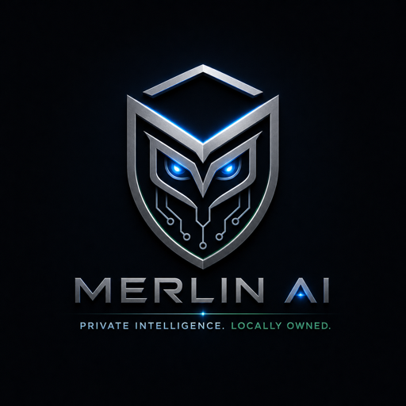

Your private AI. On your Mac. Forever.
A local-first AI stack for hardware you own: local chat, local models, automation, memory storage, and Merlin Dashboard visibility. No cloud account is required by default.
http://localhost:8888~/merlin-aiinstall.sh in the background